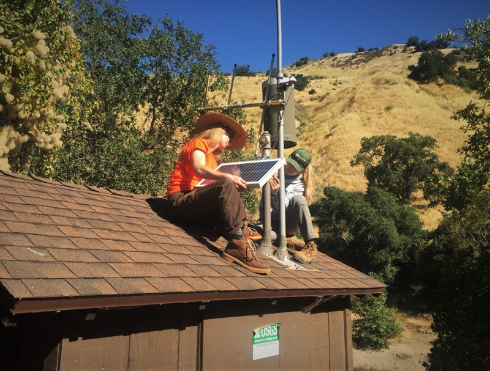

1. Choose an essential service
Begin with a job a household or neighbor needs to do. Examples include reading a repair manual, sending a check-in, keeping a light available, or finding the right tool. Record the normal method, what fails if power or internet drops, and the smallest useful fallback.
Build one complete workflow from ordinary parts. Give it a parts list, an owner, a second person who can run it, and a check they can perform without the builder present.
2. Make an offline kit from scratch
Collect a laptop or phone you already own, a portable copy of essential references, a simple printed index, and two independent copies of irreplaceable files. Keep useful maps, repair instructions, device manuals, and operating checklists in formats people can open. Put private contact information and household records in their own protected copies.
- Start with one PDF manual and one plain-text procedure. Record the date and source.
- Disconnect from the internet and open both on a second device.
- Hand over just the kit and ask someone to find one instruction. Log the time, missing file, or reader they needed.
Try the verified offline reading sample · Turn a task into a lesson · Kiwix Reader
3. Practice communications without internet
Agree on two meeting points, an out-of-area contact, and a check-in schedule. Print the plan for the people who need it. Write simple test messages with a time, whether help is needed, and the next check-in. Test the usual channel first, then practice with internet off. Verify that the second person understands the message and knows what to do when no reply arrives.
Use a battery radio for receiving official alerts when phones are unavailable. For any transmitting radio, check local licensing, equipment, and operating rules. Record coverage and dead spots as observations from a practice run.
FEMA preparedness guide (PDF) · FCC GMRS rules in the United States
Run a 20-minute practice. Use a fictional note if practicing outside the household. At minute 0, tell participants which channels you will simulate as unavailable. At minute 5, send a practice check-in with a time and a next step. At minute 10, have the receiver read it back. At minute 20, stop the drill and compare what was received with what was sent. If someone missed it, record the agreed fallback on paper and repeat the missed step.
4. Measure portable power and solar
Start with equipment designed for the loads and make a daily energy budget. A 4 W light for 5 hours uses 20 Wh. A 3 W receiver for 4 hours uses 12 Wh. With a 12 Wh phone recharge, the example total is 44 Wh/day. If a unit provides 96 Wh of measured usable energy at the output, 96 ÷ 44 gives about 2.2 days at that usage.
For a preliminary solar example, 44 Wh ÷ (2 equivalent full-sun hours × 0.75 effective yield) is about 29 W of rated collection before reserves. Real output depends on conditions, compatible charging hardware, and measured losses. Track generation over poor-weather days and compare it with actual demand. Use a compatible portable system for the practice test. Hire qualified installers to design and commission permanent backup systems.
See the larger VATRA energy example · DOE solar resilience guidance

Compare a clear and a cloudy day. For the 44 Wh/day example, a 30 W panel at 75% combined yield gives 45 Wh at two equivalent full-sun hours. At half an hour it gives 11.25 Wh, leaving a 32.75 Wh shortfall. Record actual output in both conditions before depending on it.
Calculate with your measurements · Save the calculator for offline use · Print the worksheet (PDF) · Download the measurement log (CSV)
5. Operate through setbacks and long disruptions
During a normal week, repair what fails often, build a spare-parts inventory, and teach someone to take over. For an emergency, use the tested fallback, confirm the safety of the people involved, and follow official alerts, shelter, and evacuation guidance. Check in with neighbors or a community organization where it is safe to do so.
When outages or armed conflict interrupt essential services for an extended period, track what each service consumes, how supplies can be replenished, who needs help, and how repairs are handed off. Prioritize safe water, sanitation, food, warmth, and access to care. Keep backups and supplies distributed across practical locations and coordinate shared needs with trusted neighbors and local responders.
6. Maintain, upgrade, and return time to families
Keep a maintenance calendar. Record the part, person, cost, last test, next check, and fallback. After each upgrade, repeat the original offline and outage tests and keep the working revision available. Rotate responsibilities and teach one skill during routine work so a family can work and learn together.
Track time returned as recurring hours avoided minus recurring maintenance hours. Record actual hours and who benefits. Use that time for rest, family projects, serving neighbors, or paid work by choice. Pricing starts with the parts you are missing plus upkeep and replacement costs.